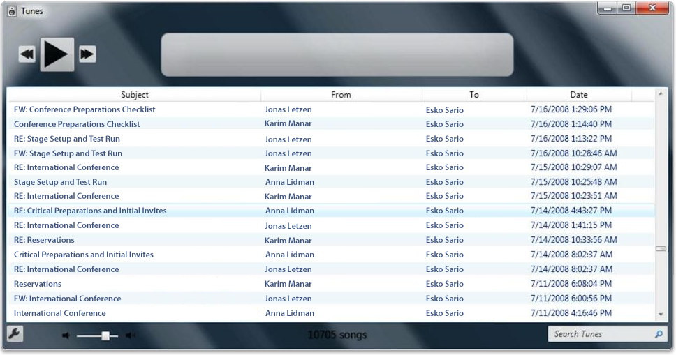

The Windows Search SDK provides an interopability assembly for you to work with Component Object Model (COM) objects that are exposed by Windows Search and other programs against the interfaces and classes using managed code. The interopability assembly is digitally signed by Microsoft and can be found with the Windows Search samples.
This topic is organized as follows:
If you are working in the Microsoft .NET environment, use the Windows API Code Pack for Microsoft .NET Framework to obtain search results, or just browse the namespace. The Windows API Code Pack for Microsoft .NET Framework provides you with a collection of Shell items that are essentially wrappers around the native IShellItem Interface. You can iterate over this collection and get the various property values in a fashion similar to how you would enumerate the results in a table from an Object Linking and Embedding Database (OLEÂ DB) query.
The following code snippet illustrates how to iterate over Search items and obtain the property values for each.
foreach (ShellObject so in KnownFolders.SavedSearches)
{
searchFolder = new ShellSearchFolder(finalSearchCondition, (ShellContainer)so);
List<ShellObject> items = new List<ShellObject>();
foreach (ShellObject so2 in searchFolder) items.Add(so2);
}
You can access index results through either OLEÂ DB or the Shell data model. There are advantages and disadvantages with either approach. One advantage is that OLEÂ DB and Structured Query Language (SQL) are familiar to database programmers. Other advantages are better control over performance when querying only the indexer, and access to additional functionality such as the ability to locate previous results in a new rowset quickly.
Advantages of the Shell data model are that it abstracts across different sources of information such as OpenSearch, and provides access to additional functionality such as thumbnails and property handlers. Nor does the Shell object model require special case support for non-filename results such as mail items and OneNote results, nor for any item that resides in the user's index. Note that in Shell KNOWNFOLDERID is the known folder scope for local indexed content. For more information on creating a Shell data source, see Implementing the Basic Folder Object Interfaces.
OpenSearch data sources are not exposed through OLE DB for federated search in Windows 7 and later. For this reason we recommend that you consider writing a LINQ provider for the Shell namespace instead of using OLE DB to access the indexer results. For more information, see Walkthrough: Creating an IQueryable LINQ Provider.
The following screenshot represents a mock up of a sample application created with the Windows API Code Pack for Microsoft .NET Framework.

Conceptual
Other Resources
Cross-Language Interoperability
Â
Â